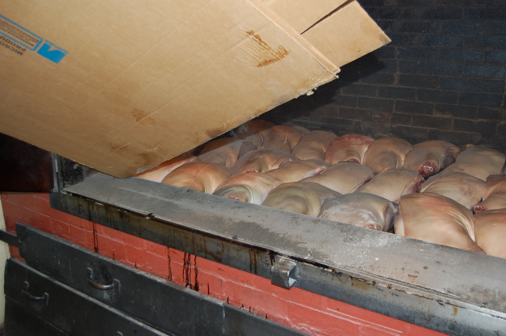
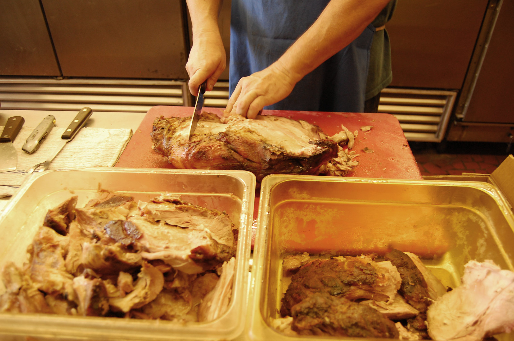
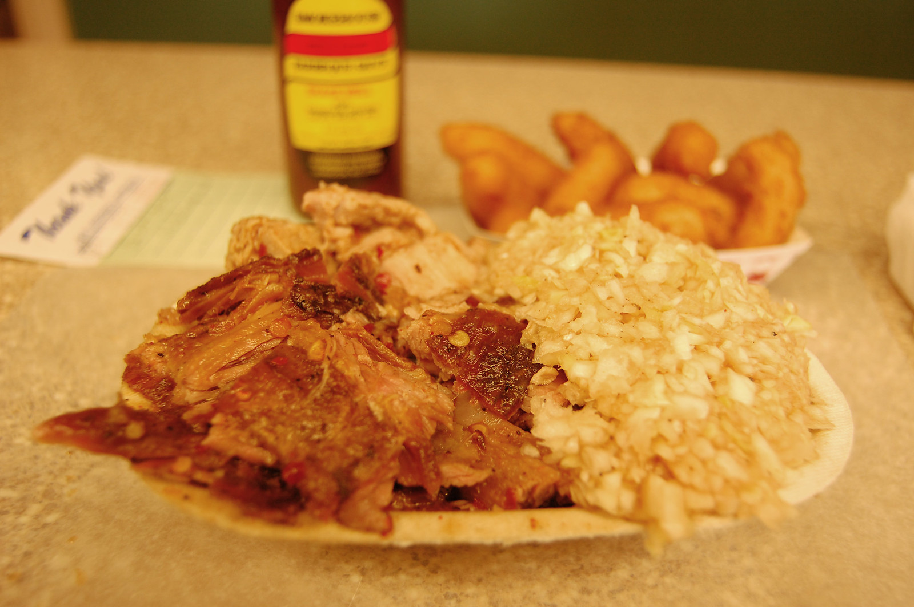

a place · NCLexington Barbecue
also: Lexington Barbecue #1 · The Honeymonk · Honey Monk's · The Monk
![A black-and-white postcard of a single-storey roadside restaurant with a stone-faced lower wall and striped awnings over each window. A sign along the roof ridge reads LEXINGTON BAR-B-Q; a tall pole sign stands at the right edge of the frame, and two petrol pumps and a vending machine sit by the right-hand door. A light-coloured car of the early 1950s is parked at the left. Houses and trees on a rise behind. Printed beneath the image: “The Original LEXINGTON BARBECUE — North of Winston Salem, N. C. — Hwy. 52 at Motor Rd.”](../../images/lexington-barbecue/lexington-barbecue-the-original-lexington-barbecue-postcard.jpg)
The pork-shoulder pit on Smokehouse Lane in Lexington, Davidson County, that Wayne Monk opened in 1962 at 26 after working under Warner Stamey, and that he owns with his son Rick. Shoulders cook nearly half a day over oak and hickory coals under four brick chimneys whose white smoke shows from the road; the meat is served chopped or sliced with the 'dip', the thin vinegar-and-ketchup sauce of the Piedmont, and with red slaw dressed with the same. Locals call it the Honeymonk, after Monk and his early partner Sonny Hunneycutt. The James Beard Foundation named it an America's Classic in 2003.
When they are open
Tuesday to Saturday, 10 to 9.
open closed not published · Cited · web-lexbbq-about · checked 2026-09-16 · why so many close Sunday
The story Cited · web-davidsonlocal-wayne-monk
Wayne Monk worked under Warner Stamey, the man who carried the Lexington method out of the Weaver and Swicegood stands of the 1920s, and in 1962, at 26, opened his own place with Sonny Hunneycutt. The partner left; the joined name, Honeymonk, stayed on the town's tongue, and DavidsonLocal, reporting Monk's induction into the NC Bar-B-Q Hall of Fame on March 1, 2024, tied the name to the two surnames. Wikipedia records the 1962 founding and the James Beard Foundation's America's Classic award of 2003, the same year the Skylight Inn in Ayden got one — the two North Carolinas honored together. Our State counts about a thousand customers a day. Wayne and Rick Monk own it together, and the restaurant's own page lists Rick as owner.
How it is done Cited · web-lexbbq-about
Pork shoulders cook nearly half a day over oak and hickory coals. The plate is barbecue — chopped, coarse-chopped or sliced — with red slaw, hushpuppies and fries; a tray drops the bread. The dip is thin, vinegar with ketchup, spices and sugar, and the slaw is dressed with it, which is why it is red. Onion rings and barbecue beans are on the board.
Today Cited · web-lexbbq-about
Open Tuesday to Saturday 10 to 9, closed Sunday and Monday, at 100 Smokehouse Lane, Lexington, per the restaurant's site in September 2026. OpenStreetMap lists Monday hours as well; the restaurant's own page is followed here.
Facts
| state | NC |
|---|---|
| status | open |
| founded | 1962 |
| fuel | wood |
| styles | Lexington-style barbecue |
| region | The North Carolina Piedmont |
| address | 100 Smokehouse Ln, Lexington, NC, 27295 · Davidson County Harvested · osm |
| where | 35.8341, -80.2675 (street) · OpenStreetMap · open in maps Harvested · osm |
| links | Lexington Barbecue — official · Lexington Barbecue — Wikipedia · Murphy to Manteo: Lexington Barbecue — Our State |
| confidence | high · updated 2026-09-16 |
Not to be confused with
- Lexington Barbecue Festival — The restaurant is a pit on Smokehouse Lane open six days a week; the festival is a one-day October street fair uptown, held since 1984, with many restaurants cooking.
- Lexington-style barbecue — Lower-case, 'Lexington barbecue' is the style — shoulders, dip, red slaw — cooked at some twenty places in town; capitalized, it is this one restaurant.
Near here
Crow-flies miles; the road is always longer. The finder sorts every pit in both states from where you are.
- 1.1 mi — Speedy Lohr's Barbecue Lexington 🔥 Cooks over wood ♀ Woman-owned 👪 Family-run
- 1.3 mi — Bar-B-Q Center Lexington 🔥 Cooks over wood 👪 Family-run
- 1.3 mi — Speedy's Barbecue Lexington 👪 Family-run ♀ Woman-owned
- 6.6 mi — Tarheel Q Lexington 🔥 Cooks over wood ♀ Woman-owned 👪 Family-run
- 8.6 mi — Cook's Barbecue Lexington ⚫ Closed 🔥 Cooks over wood 👪 Family-run
Its kin
Who points back
Pictures



Sources
- Lexington Barbecue — Wikipedia · link
- About Us — Lexington Barbecue · link
- Lexington Barbecue (Bob Garner, 2012-08-31) · link
- Wayne Monk inducted into the NC Bar-B-Q Hall of Fame — DavidsonLocal (10 Mar 2024) · link
- Stamey's Barbecue — Chip Stamey, interviewed by Rien T. Fertel, 18 Nov 2011 · link
- Skylight Inn BBQ — Wikipedia · link
- OpenStreetMap — places tagged cuisine=barbecue in North Carolina and South Carolina · link
- True 'Cue NC — certified pits · link
- List of James Beard America's Classics · link
- North Carolina Postcards, North Carolina Collection Photographic Archives · link
- Flickr Commons · link
- UNC Libraries Commons on Flickr Commons · link
- Southern Foodways Alliance photographs on Flickr · link
- Flickr — individually licensed photographs · link
Where it came from: Cited a source we name · Harvested pulled from an open dataset · Tradition what the tradition says, hedged · Inference this project's reasoning · Field somebody stood there. This record as JSON.